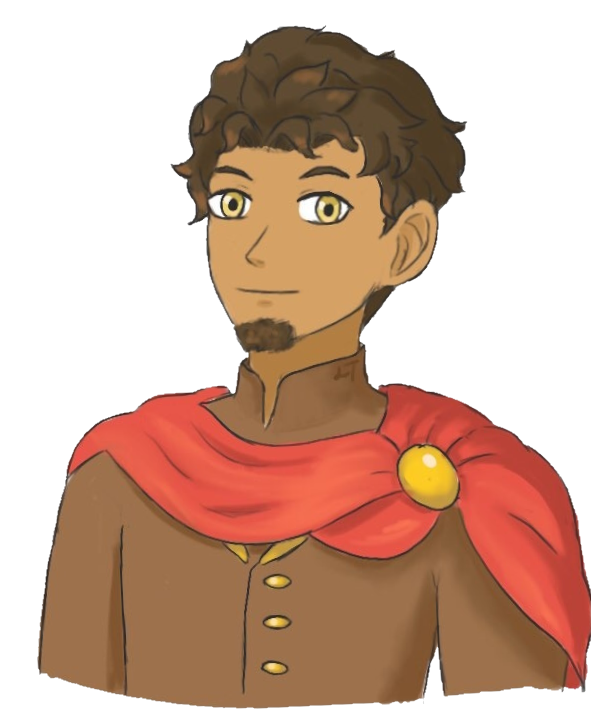

|
 |
Name: Uzair al Kralsah Race: Human Gender: Male Sexuality: Straight/demisexual Birthday: 15th of the Wyvern Moon (October 15), 1163 Height: 5'5 Hair: Dark brown, curly Eyes: Yellow Skin: Tan Country: Almyra |
Personality: Introverted and quiet, often eats lunch on his own and just observes. He will interact with people if they talk to him first, he has an interest in chess and folklore so those are the easiest topics to use on him. Once he’s interacting he’s generally friendly if not a bit distant and secretive. When he’s angry or stressed his Almyran accent comes out heavily, he’ll start replacing Ps with Bs in his speech and yelling. Appearance: Tan with curly dark brown hair and yellow eyes, and normally keeps his facial hair in a goatee. Despite being the younger brother, he’s actually a few inches taller than Claude/Khalid due to his mother being kind of a string bean. Has a decent amount of body hair that’s usually covered by clothing. Normally wearing silk jackets/cloaks with loose fitting pants and boots. Likes: Folklore, board games, reading, dried meat sticks Dislikes: Large crowds, loud people, cardamom, being teased |
Born as the second (known) child of Boran al Kralsah, the “Thunder King” of Almyra, a year after Khalid al Kralsah/Claude Ramiel Riegan was born. His mother, Jasmine, had been arranged to marry the king, but nobody expected Tiana to show up as the first wife. Boran was a man of his word, though, and brought Jasmine in as a queen as well.
The two queens socialized their sons with each other from an early age. Khalid was always the ringleader, coming up with ideas that got them both in trouble. When Uzair was twelve, Khalid got the letter from across the border from his maternal grandfather. He was to attend the academy his mother attended, going by his Leicester name. Uzair was to stay in Almyra and get schooling there. His mandatory military service for Almyran princes was in the navy, and he passed the military part reluctantly, but enjoyed the academic part. His reward at the end was a warship that he got to name. He named it the Gray Azura, after the songstress in one of his favorite folktales. He developed a close-ish bond with a mage his age who was the daughter of a notable sage and a mercenary. He picked Danah as his navigator as well as putting her on fire orb duty.
While Khalid/Claude dealt with the War of Flames in the mainland, little did he know that war had broke out back in Almyra too. An ex lover of the Thunder King, Nasira, had appeared with her bastard son that she had raised to be bitter and attempt to take the throne by force. Shahid had all the chaotic brashness of his father, but not a lot of his smarts. Nevertheless, he had a rebel army called the Hailstones. The loyalists became known as the Thunderbolts, and much to Uzair’s chagrin, he was in charge.
For a year and a half, the loyalists and rebels fought over control of Almyra. The climatic battle took place at Kirilmaz Fortress, the last obstacle in the Hailstones’ path to the capital, Caglar. When Shahid taunted Uzair about making Danah one of his queens, Uzair snapped. Over his dead body was that going to happen! And the rebel prince took a scimitar to his throat, snuffing out his life.
The war was over, and now Uzair had another thing troubling his mind. He’d had several women throwing themselves at him over the years. He’d had opportunities galore to take one to bed. But he could never do it, it felt wrong. He’d figured someday, he would have to take a wife and reluctantly add to the royal bloodline. But now…it turned out there was one woman who he felt happy around and the war made him realize this.
He invited Danah out one night, gave her a rose, and told her what was on his mind. She really loved that rose…one thing led to another and before he knew it, he had bedded her right there in that field. She found him the next morning to tell him she wanted more of that, she wanted to be a consort or honorary princess. She’d taken plan B herbs, they didn’t need to risk that right now.
The above canon is the well, canon version of his story, but there is a bit of an idea I have where he attends Garreg Mach as “Ulysses”. It’s not as fleshed out, but he makes friends with Ashe (over knight stories), Marianne (he listens to her talk about Dorte the horse, Lorenz and Hilda think he’s flirting with her, he is not), and maybe Ingrid (also over knight stories but he senses he has to hide his identity more around her). There’s an incident where he and Bernadetta both order food and he gets hers and she gets his, resulting in him pleading at her door for her to come swap the food until she finally does and slams the door in his face. He gets along with Ignatz too and may talk to him about art. Raphael is interested in his lunches of meat and spiced rice. Leonie is a bit too high energy for his liking (although she reminds him of his stepmom in a way) and he avoids Lorenz (because he thinks he’s too nosy) and Lysithea (because her loud shrill screeches when she’s being rude to people hurt his ears).
He could interact with other Almyrans, whether they’re undercover or not. He might cling to Claude but he knows when his brother is busy.
Khalid returned to find his formerly timid and meek brother a changed man: a civil war veteran with a pretty mage gal wrapped around his finger. The Royal Challenge, a gladiator spar in which the king tests his son to see if he has the power to rule, was coming up. Uzair defeated his father, almost by the skin of his teeth, but he passed. Khalid had brought him a present: a blue wyvern hatchling who was named Kurbaga and would become a fine mount someday.
And with time, during a tour of his ship he was giving to Danah’s parents, he proposed. Their first child came almost a year after the wedding: a girl, but he was going to raise her to feel just as important as any brothers. Then came a son, then another girl who clearly inherited her father’s oddness. Two more sons, and during a time when Almyra was ravaged by a famine, one last child: a tiny boy who remained small his whole life but took after his mother and became a glass cannon mage.
Khalid, meanwhile, married his academy sweetheart, Hilda, and fathered a set of twins. He decided to remain as Leicester’s archduke since he had a brother he trusted in Almyra running things there.
Years passed, and one quiet day, the Thunder King died peacefully surrounded by loved ones. After thunder comes rain, and one of the first messages sent by telegraph on the continent was a message from the newly crowned Rain King to the Leicester archduke informing him their father was gone. Tiana was returning to the land of her birth to live out her retirement years, but not without giving her stepson a big hug.
|
RelationshipsBoran al Kralsah: father Jasmine al Kralsah(Attar): mother Tiana Danica Riegan/Kralsah: stepmother Claude Ramiel Riegan/Khalid al Kralsah: half brother Shahid Sadik: estranged half brother Danah al Kralsah(Dikec): wife Nasrin, Zarka: daughters Aziz, Zahd, Mayur, Rajah: sons Giselle Judith Riegan: niece Collin Nardel Riegan: nephew
|
Starting Class
Blade Mage
Best Class
Rain Prince |
|
Personal Skill:Desert Monsoon If unit attacks an enemy and there are allies within attack range of the enemy, those allies will perform a dual strike after unit's attack. |
Crit Quotes:"You pushed me too far!"
Death Quote:"...No. |
| Him and his niece Giselle by Heiden | |